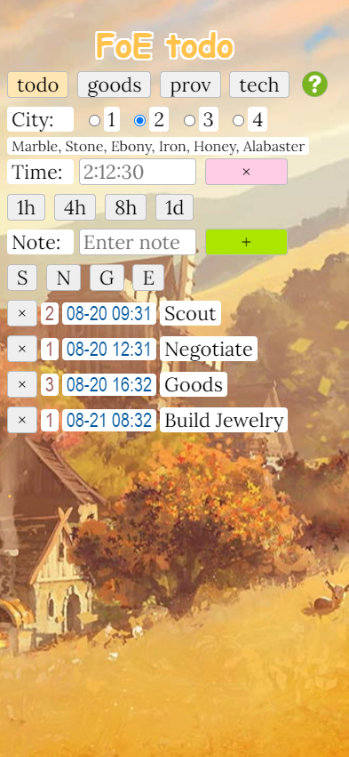
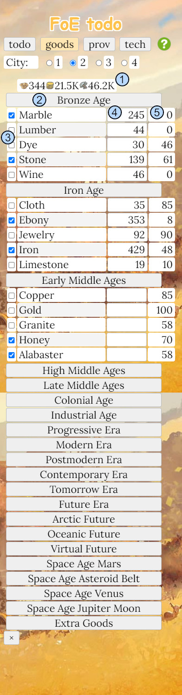
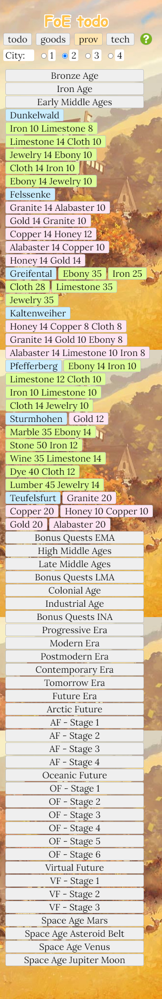
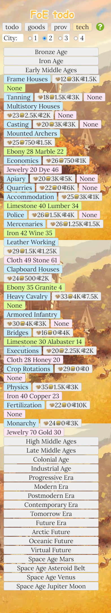
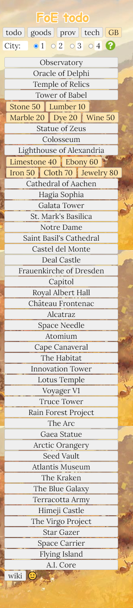

"FoE todo" Help
Contents

"FoE todo" has four tabs: "todo", "goods", "prov" and "tech".
Below the tabs are radio buttons to select one of up to four Cities.
Next is a list of discovered "deposits". These can be marked on the "goods" tab.
To create a "todo" log entry, first set the City.
Time can be entered using the presets or manually as "mmm" or "d:mm:mm" e.g. 90 or 1:30. This offset will be added to the current time and logged as a future time.
Then you enter a Note using the presets or manually.
When all entries look correct then press the green "+" button to log your entry. The logged entry is City, Future Time and Note. You clear a single logged entry with the "x" delete button.
The red "x" deletes all logged entries.

You can track inventory for 4 cities. You can mark the deposits per Era you discover. These will show on the "todo" tab.
To the right of the inventory count is the sum of the negotiation and technology "costs" for Era's who have been expanded on the "prov" tab and the "tech" tab.
If a Technology for an Era has been expanded, then you will see the resource unlock "costs" in FP, Coins and Supplies.
① Technology unlock "costs" in resources
② Era button
③ discovered "deposits"
④ inventory count
⑤ Provinces negotiation and Technology unlock "costs" in goods

When you click on an Era button, it will expand to show the Provinces plus a "goods" button for each sector's negotiation "costs".
This will cause all red goods "costs" to be added to the "goods" tab.
When you click a "goods" button it changes color from red to green meaning you either negotiated for that sector or won the battle for it.
The green or "conquered" sector's goods will be removed from the "costs" on the "goods" tab.
If you close an Era, all goods "costs" will be removed from the "goods" tab.

When you click on an Era button, it will expand to show the Technology branches plus a button for the "resources" and "goods" required to unlock the technology.
This will cause all the red resources and goods "costs" to be added to the "goods" tab.
When you click a "goods" button it changes color from red to green meaning you "unlocked" it.
When a Technology is green or "unlocked", it's resources and goods "costs" will be removed from the "goods" tab.
If you close an Era, all resource and goods "costs" will be removed from the "goods" tab.
